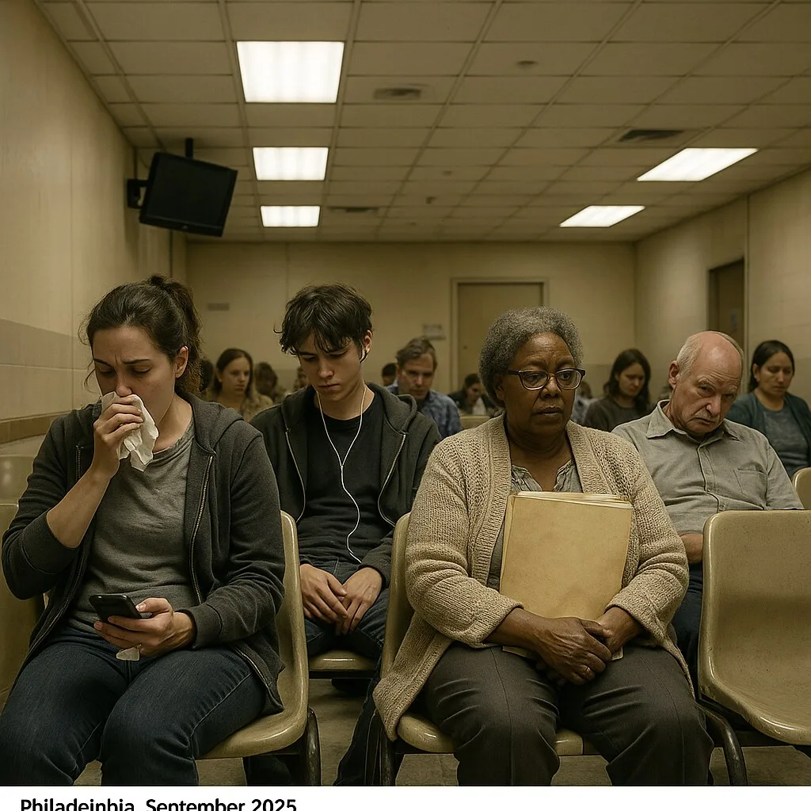
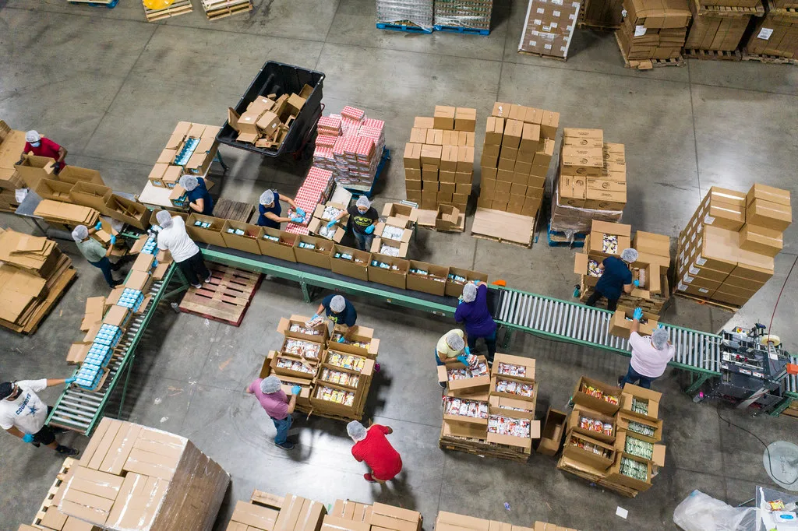
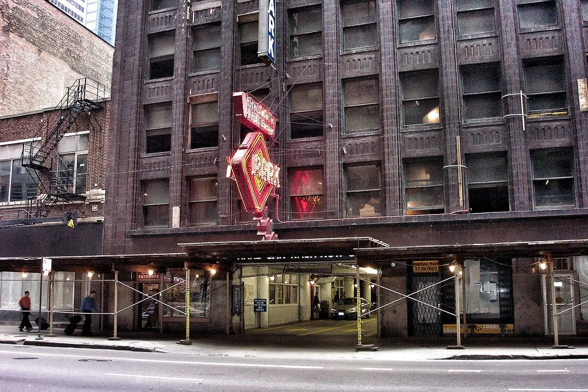

병원 예약 웹 Next.js · 서버 렌더링 첫 화면이 뜨는 데 4.8초. 어르신 이용자가 많아 이탈이 컸습니다. ↗ 링크
사내 물류 대시보드 React · WebSocket 3만 행 테이블에서 필터를 바꾸면 8초씩 멈췄습니다. ↗ 링크 구독 결제 모듈 Node.js · PostgreSQL 결제 실패가 월 300건인데 원인을 아무도 몰랐습니다. ↗ 링크
출퇴근 기록 앱 Flutter · 오프라인 우선 지하 주차장에서 기록이 안 된다는 문의가 매일 왔습니다. ↗ 링크 디자인 시스템 이전 TypeScript · 모노레포 팀이 셋인데 버튼 컴포넌트가 열한 종류였습니다. ↗ 링크견적서에 성능 목표를 숫자로 씁니다. LCP 1.5초 이하, 상호작용 200ms 이하처럼요. 못 지키면 그 부분은 청구하지 않습니다.
납품할 때 측정 리포트를 같이 드립니다. 어떤 기기에서 몇 초가 걸리는지, 어디를 더 줄일 수 있는지 적어 둡니다.
모든 프로젝트가 같은 다섯 단계를 지납니다. 단계마다 무엇을 넘기는지 미리 정해 둡니다.
무엇을 만들지, 언제까지 필요한지, 어떤 기기를 주로 쓰는지 세 가지만 알려 주세요.
하루 안에 가능 여부와 대략의 범위를 회신합니다. 성능 목표는 견적서에 숫자로 적어 드립니다.